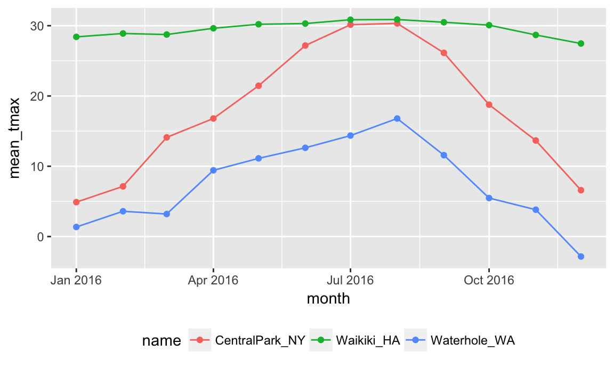

Exploratory analysis using group_by
Data sets can frequently be partitioned into meaningful groups based on the variables they contain. Making this grouping explicit allows the computation of numeric summaries within groups, which in turn facilitates quantitative comparisons.
Example
Stay in the same project. Use a similar dataset – weather from three stations last year – and add a variable month.
library(rnoaa)
weather =
meteo_pull_monitors(c("USW00094728", "USC00519397", "USS0023B17S"),
var = c("PRCP", "TMIN", "TMAX"),
date_min = "2016-01-01",
date_max = "2016-12-31") %>%
mutate(
name = recode(id, USW00094728 = "CentralPark_NY",
USC00519397 = "Waikiki_HA",
USS0023B17S = "Waterhole_WA"),
tmin = tmin / 10,
tmax = tmax / 10,
month = lubridate::floor_date(date, unit = "month")) %>%
select(name, id, date, month, everything())
weather
## # A tibble: 1,098 x 7
## name id date month prcp tmax tmin
## <chr> <chr> <date> <date> <dbl> <dbl> <dbl>
## 1 CentralPark_NY USW00094728 2016-01-01 2016-01-01 0 5.6 1.1
## 2 CentralPark_NY USW00094728 2016-01-02 2016-01-01 0 4.4 0.0
## 3 CentralPark_NY USW00094728 2016-01-03 2016-01-01 0 7.2 1.7
## 4 CentralPark_NY USW00094728 2016-01-04 2016-01-01 0 2.2 -9.9
## 5 CentralPark_NY USW00094728 2016-01-05 2016-01-01 0 -1.6 -11.6
## 6 CentralPark_NY USW00094728 2016-01-06 2016-01-01 0 5.0 -3.8
## 7 CentralPark_NY USW00094728 2016-01-07 2016-01-01 0 7.8 -0.5
## 8 CentralPark_NY USW00094728 2016-01-08 2016-01-01 0 7.8 -0.5
## 9 CentralPark_NY USW00094728 2016-01-09 2016-01-01 0 8.3 4.4
## 10 CentralPark_NY USW00094728 2016-01-10 2016-01-01 457 15.0 4.4
## # ... with 1,088 more rowsgroup_by
Central idea here is grouping by a variable or collection of variables. Adds a partition to your data and allows you to apply functions within those partitions.
summarizing within groups
mutating within groups
Sometimes you have a grouping and you need to remove it; use ungroup().
Counting things
As an intro to summarize, let’s count the number of observations in each month.
weather %>%
group_by(month) %>%
summarize(n = n())
## # A tibble: 12 x 2
## month n
## <date> <int>
## 1 2016-01-01 93
## 2 2016-02-01 87
## 3 2016-03-01 93
## 4 2016-04-01 90
## 5 2016-05-01 93
## 6 2016-06-01 90
## 7 2016-07-01 93
## 8 2016-08-01 93
## 9 2016-09-01 90
## 10 2016-10-01 93
## 11 2016-11-01 90
## 12 2016-12-01 93Note this returns a dataframe that includes the grouping variable and the summary.
Could use count(), if you remember it exists. It’s a handy specialized function.
weather %>%
count(month)
## # A tibble: 12 x 2
## month n
## <date> <int>
## 1 2016-01-01 93
## 2 2016-02-01 87
## 3 2016-03-01 93
## 4 2016-04-01 90
## 5 2016-05-01 93
## 6 2016-06-01 90
## 7 2016-07-01 93
## 8 2016-08-01 93
## 9 2016-09-01 90
## 10 2016-10-01 93
## 11 2016-11-01 90
## 12 2016-12-01 93Can count both total observations and distinct occurances of another variable
weather %>%
group_by(month) %>%
summarize(n_obs = n(),
n_days = n_distinct(date))
## # A tibble: 12 x 3
## month n_obs n_days
## <date> <int> <int>
## 1 2016-01-01 93 31
## 2 2016-02-01 87 29
## 3 2016-03-01 93 31
## 4 2016-04-01 90 30
## 5 2016-05-01 93 31
## 6 2016-06-01 90 30
## 7 2016-07-01 93 31
## 8 2016-08-01 93 31
## 9 2016-09-01 90 30
## 10 2016-10-01 93 31
## 11 2016-11-01 90 30
## 12 2016-12-01 93 31General summaries
Lots of functions return a single number; many of these are standard statistical quantities: mean(), median(), var(), sd(), mad(), IQR(), min(), and max(). To use these, you’ll also have to indicate the variable to which they apply.
weather %>%
group_by(month) %>%
summarize(mean_tmax = mean(tmax),
median_tmax = median(tmax))
## # A tibble: 12 x 3
## month mean_tmax median_tmax
## <date> <dbl> <dbl>
## 1 2016-01-01 11.55269 5.0
## 2 2016-02-01 13.20920 8.8
## 3 2016-03-01 15.35161 13.3
## 4 2016-04-01 18.61667 18.3
## 5 2016-05-01 20.92688 21.1
## 6 2016-06-01 23.36889 28.3
## 7 2016-07-01 25.11828 29.4
## 8 2016-08-01 25.99892 30.0
## 9 2016-09-01 22.73444 26.7
## 10 2016-10-01 18.10645 18.3
## 11 2016-11-01 15.38778 14.7
## 12 2016-12-01 10.40645 7.8You can also group by more than one variable if you need more refined summaries.
weather %>%
group_by(name, month) %>%
summarize(mean_tmax = mean(tmax),
median_tmax = median(tmax))
## # A tibble: 36 x 4
## # Groups: name [?]
## name month mean_tmax median_tmax
## <chr> <date> <dbl> <dbl>
## 1 CentralPark_NY 2016-01-01 4.893548 5.0
## 2 CentralPark_NY 2016-02-01 7.137931 5.0
## 3 CentralPark_NY 2016-03-01 14.109677 13.3
## # ... with 33 more rowsThe fact that this is producing a dataframe is important – you can incorporate grouping and summarizing within broader analysis pipelines. For example, we can take the previous example and plot it.
weather %>%
group_by(name, month) %>%
summarize(mean_tmax = mean(tmax),
median_tmax = median(tmax)) %>%
ggplot(aes(x = month, y = mean_tmax, color = name)) +
geom_point() + geom_line() +
theme(legend.position = "bottom")
Grouped mutate
In contrast to summarize, we can create new variables based on our grouping.
Suppose we wanted to see the change in max temperature within each month.
weather %>%
group_by(name) %>%
mutate(change_tmax = tmax - mean(tmax)) %>%
ggplot(aes(x = date, y = change_tmax, color = name)) +
geom_point() 
Window functions
Here we’ve used mean() to compute the mean within each group (a single number) and taken the difference. Window functions, in contrast, use n inputs and return n outputs, and the outputs depend on all the inputs. You’re most likely to need ranking functions and offsets, which we illustrate below.
Find temperature ranking within month.
weather %>%
group_by(name, month) %>%
mutate(temp_ranking = min_rank(tmax))
## # A tibble: 1,098 x 8
## # Groups: name, month [36]
## name id date month prcp tmax tmin
## <chr> <chr> <date> <date> <dbl> <dbl> <dbl>
## 1 CentralPark_NY USW00094728 2016-01-01 2016-01-01 0 5.6 1.1
## 2 CentralPark_NY USW00094728 2016-01-02 2016-01-01 0 4.4 0.0
## 3 CentralPark_NY USW00094728 2016-01-03 2016-01-01 0 7.2 1.7
## # ... with 1,095 more rows, and 1 more variables: temp_ranking <int>Retain the coldest day within each month:
weather %>%
group_by(name, month) %>%
filter(min_rank(tmax) < 2)
## # A tibble: 47 x 7
## # Groups: name, month [36]
## name id date month prcp tmax tmin
## <chr> <chr> <date> <date> <dbl> <dbl> <dbl>
## 1 CentralPark_NY USW00094728 2016-01-23 2016-01-01 587 -2.7 -4.3
## 2 CentralPark_NY USW00094728 2016-02-14 2016-02-01 0 -9.3 -18.2
## 3 CentralPark_NY USW00094728 2016-03-03 2016-03-01 0 2.2 -3.2
## # ... with 44 more rowsRetain the warmest day within each month:
weather %>%
group_by(name, month) %>%
filter(min_rank(desc(tmax)) < 2)
## # A tibble: 63 x 7
## # Groups: name, month [36]
## name id date month prcp tmax tmin
## <chr> <chr> <date> <date> <dbl> <dbl> <dbl>
## 1 CentralPark_NY USW00094728 2016-01-10 2016-01-01 457 15.0 4.4
## 2 CentralPark_NY USW00094728 2016-02-20 2016-02-01 0 16.1 3.9
## 3 CentralPark_NY USW00094728 2016-02-25 2016-02-01 5 16.1 2.8
## # ... with 60 more rowsIn both of these, we’ve skipped a mutate statement that would store the ranking and gone straight to filtering based on the result.
Find the day-by-day change in temp within each station over the year.
weather %>%
group_by(name) %>%
mutate(temp_change = tmax - lag(tmax))
## # A tibble: 1,098 x 8
## # Groups: name [3]
## name id date month prcp tmax tmin
## <chr> <chr> <date> <date> <dbl> <dbl> <dbl>
## 1 CentralPark_NY USW00094728 2016-01-01 2016-01-01 0 5.6 1.1
## 2 CentralPark_NY USW00094728 2016-01-02 2016-01-01 0 4.4 0.0
## 3 CentralPark_NY USW00094728 2016-01-03 2016-01-01 0 7.2 1.7
## # ... with 1,095 more rows, and 1 more variables: temp_change <dbl>Which stations have the most variability in temperature? What’s the largest one-day increase?
weather %>%
group_by(name) %>%
mutate(temp_change = tmax - lag(tmax)) %>%
summarize(temp_change_sd = sd(temp_change, na.rm = TRUE),
temp_change_max = max(temp_change, na.rm = TRUE))
## # A tibble: 3 x 3
## name temp_change_sd temp_change_max
## <chr> <dbl> <dbl>
## 1 CentralPark_NY 4.278321 12.2
## 2 Waikiki_HA 1.146472 5.0
## 3 Waterhole_WA 2.817583 9.0Note that we included na.rm = TRUE – the lag on the first day isn’t defined.
Limitations
Can only perform simple operations within a group. This is very high ceiling – you can do tons of stuff using simple operations when you combine them with groupings, mutates, filtering, etc – but it is a ceiling. Later we’ll see how to aggregate data in a more general way, and how to perform complex operations on these sub-datasets.
Other materials
http://stat545.com/block010_dplyr-end-single-table.html#group_by-is-a-mighty-weapon
http://r4ds.had.co.nz/transform.html#grouped-summaries-with-summarise http://r4ds.had.co.nz/exploratory-data-analysis.html
https://cran.r-project.org/web/packages/dplyr/vignettes/window-functions.html